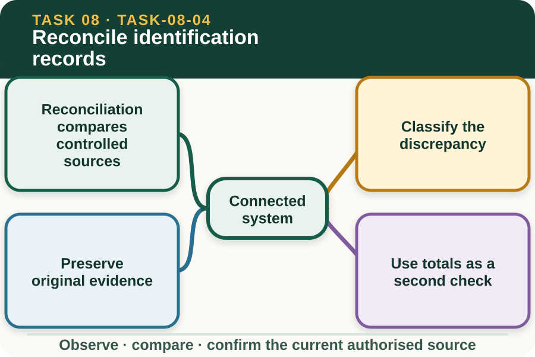

Classroom presentation · 8 slides
Reconcile identification records
Task 8 · 1 of 8
Reconcile identification records
Find and resolve missing, duplicated or inconsistent identifiers using the authorised reporting pathway.

Speaker notes
Teaching move (web-deck purpose): Use the module visual and the fictional worked example to move students from observation to a source-led decision. Ask students to name the evidence, the authority gap and the next safe communication step. Misconception and help: A matching count can still contain the wrong identities. Compare every identifier, then compare the total. Applied action: Reconcile two fictional registers. Compare two invented identifier lists and tally sheets. Highlight matches, duplicates, missing entries and format differences, then draft an authorised correction request without changing either source. Boundary: This supplementary learning draws on mapped AHCLSK225 concepts. Current signed TAS and RTO documents control cohort delivery, assessment and competency decisions; current workplace procedures, supervision and authorised sources control real work. [Sources] - Source basis: AHCLSK225 Release 1 tally, record, outcome-reporting and completion requirements, supported by livestock identification traceability concepts. Current regulatory and enterprise registers, record custodians and correction procedures control real reconciliation. - Visual visual-task-08-04: Generated locally from accepted Stage 05 module headings; no external image copied. - Course visual manifest: work/pi/visuals/visual-manifest.json
Task 8 · 2 of 8
Map the learning
- Reconciliation compares controlled sources
- Classify the discrepancy
- Preserve original evidence
Retrieve: Two lists each total four animals, but one identifier is duplicated. What follows?
Speaker notes
Teaching move (learning map): Use the module visual and the fictional worked example to move students from observation to a source-led decision. Ask students to name the evidence, the authority gap and the next safe communication step. Misconception and help: A matching count can still contain the wrong identities. Compare every identifier, then compare the total. Applied action: Reconcile two fictional registers. Compare two invented identifier lists and tally sheets. Highlight matches, duplicates, missing entries and format differences, then draft an authorised correction request without changing either source. Boundary: This supplementary learning draws on mapped AHCLSK225 concepts. Current signed TAS and RTO documents control cohort delivery, assessment and competency decisions; current workplace procedures, supervision and authorised sources control real work. [Sources] - Source basis: AHCLSK225 Release 1 tally, record, outcome-reporting and completion requirements, supported by livestock identification traceability concepts. Current regulatory and enterprise registers, record custodians and correction procedures control real reconciliation. - Visual visual-task-08-04: Generated locally from accepted Stage 05 module headings; no external image copied. - Course visual manifest: work/pi/visuals/visual-manifest.json
Task 8 · 3 of 8
Notice the evidence
Reconciliation compares controlled sources
Identification reconciliation compares the planned list, observed or recorded identifiers, tally and authorised register. The aim is to locate matches and differences without changing the evidence prematurely.
Each source should be labelled by date, revision, location and responsible person. An undated copy may help locate a question but should not silently replace the current register.
Classify the discrepancy
A discrepancy may be missing, duplicated, unreadable, transposed, linked to the wrong event or recorded in a different format. Naming the type helps the authorised custodian choose an appropriate investigation path.
Classification does not establish cause or fault. Record what differs, where each value appears and which additional current authorised source may resolve the relationship without guessing.
Speaker notes
Teaching move (theory idea 1): Use the module visual and the fictional worked example to move students from observation to a source-led decision. Ask students to name the evidence, the authority gap and the next safe communication step. Misconception and help: A matching count can still contain the wrong identities. Compare every identifier, then compare the total. Applied action: Reconcile two fictional registers. Compare two invented identifier lists and tally sheets. Highlight matches, duplicates, missing entries and format differences, then draft an authorised correction request without changing either source. Boundary: This supplementary learning draws on mapped AHCLSK225 concepts. Current signed TAS and RTO documents control cohort delivery, assessment and competency decisions; current workplace procedures, supervision and authorised sources control real work. [Sources] - Source basis: AHCLSK225 Release 1 tally, record, outcome-reporting and completion requirements, supported by livestock identification traceability concepts. Current regulatory and enterprise registers, record custodians and correction procedures control real reconciliation. - Visual visual-task-08-04: Generated locally from accepted Stage 05 module headings; no external image copied. - Course visual manifest: work/pi/visuals/visual-manifest.json
Task 8 · 4 of 8
Use the source boundary
Preserve original evidence
Do not erase, overwrite or backdate an original entry to make records align. The current enterprise correction process should preserve the earlier value, authorised correction, reason, date and responsible person.
A learner can draft a correction note using fictional data, but the authorised record custodian controls changes to real registers and any linked enterprise, regulatory or reporting duties.
Use totals as a second check
A tally can reveal that a record-level mismatch may affect the total, but equal totals do not guarantee correct identity. One duplicate and one missing identifier can cancel numerically while leaving serious traceability gaps.
Reconcile both the individual or group entries and the final total. Report any result that cannot be matched without assumption through the current authorised workplace pathway.
Speaker notes
Teaching move (theory idea 2): Use the module visual and the fictional worked example to move students from observation to a source-led decision. Ask students to name the evidence, the authority gap and the next safe communication step. Misconception and help: A matching count can still contain the wrong identities. Compare every identifier, then compare the total. Applied action: Reconcile two fictional registers. Compare two invented identifier lists and tally sheets. Highlight matches, duplicates, missing entries and format differences, then draft an authorised correction request without changing either source. Boundary: This supplementary learning draws on mapped AHCLSK225 concepts. Current signed TAS and RTO documents control cohort delivery, assessment and competency decisions; current workplace procedures, supervision and authorised sources control real work. [Sources] - Source basis: AHCLSK225 Release 1 tally, record, outcome-reporting and completion requirements, supported by livestock identification traceability concepts. Current regulatory and enterprise registers, record custodians and correction procedures control real reconciliation. - Visual visual-task-08-04: Generated locally from accepted Stage 05 module headings; no external image copied. - Course visual manifest: work/pi/visuals/visual-manifest.json
Task 8 · 5 of 8
Connect evidence to action
Report the discrepancy clearly
A discrepancy report identifies the affected sources, exact entries, mismatch type, total effect and checks already completed. It also states what has not been confirmed.
Avoid accusing a person of causing the error unless the authorised investigation establishes that fact. The immediate priority is record integrity and any current livestock or enterprise decision that may rely on the identity.
Close only after authorised correction
A reconciliation is closed when the authorised person confirms the identity relationship and the approved correction process is complete across affected records. Related systems may need coordinated updating.
The website exercise supports logic and record literacy. It does not change a real register, satisfy a legal notification, authorise practical marking or provide formal competency evidence.
Speaker notes
Teaching move (theory idea 3): Use the module visual and the fictional worked example to move students from observation to a source-led decision. Ask students to name the evidence, the authority gap and the next safe communication step. Misconception and help: A matching count can still contain the wrong identities. Compare every identifier, then compare the total. Applied action: Reconcile two fictional registers. Compare two invented identifier lists and tally sheets. Highlight matches, duplicates, missing entries and format differences, then draft an authorised correction request without changing either source. Boundary: This supplementary learning draws on mapped AHCLSK225 concepts. Current signed TAS and RTO documents control cohort delivery, assessment and competency decisions; current workplace procedures, supervision and authorised sources control real work. [Sources] - Source basis: AHCLSK225 Release 1 tally, record, outcome-reporting and completion requirements, supported by livestock identification traceability concepts. Current regulatory and enterprise registers, record custodians and correction procedures control real reconciliation. - Visual visual-task-08-04: Generated locally from accepted Stage 05 module headings; no external image copied. - Course visual manifest: work/pi/visuals/visual-manifest.json
Task 8 · 6 of 8
Retrieve and check
Two lists each total four animals, but one identifier is duplicated. What follows?
- The records reconcile because the totals are equal.
- Individual entries and totals must both be checked before reconciliation.
- Delete the duplicate and leave the total at three.
Teacher reveal
Correct. Identity accuracy cannot be established by the total alone.
Compare every identifier, then compare the total.
Speaker notes
Teaching move (retrieval): Use the module visual and the fictional worked example to move students from observation to a source-led decision. Ask students to name the evidence, the authority gap and the next safe communication step. Misconception and help: A matching count can still contain the wrong identities. Compare every identifier, then compare the total. Applied action: Reconcile two fictional registers. Compare two invented identifier lists and tally sheets. Highlight matches, duplicates, missing entries and format differences, then draft an authorised correction request without changing either source. Boundary: This supplementary learning draws on mapped AHCLSK225 concepts. Current signed TAS and RTO documents control cohort delivery, assessment and competency decisions; current workplace procedures, supervision and authorised sources control real work. [Sources] - Source basis: AHCLSK225 Release 1 tally, record, outcome-reporting and completion requirements, supported by livestock identification traceability concepts. Current regulatory and enterprise registers, record custodians and correction procedures control real reconciliation. - Visual visual-task-08-04: Generated locally from accepted Stage 05 module headings; no external image copied. - Course visual manifest: work/pi/visuals/visual-manifest.json Use option-specific feedback after the learner commits to an answer.
Task 8 · 7 of 8
Construct a source-led response
Reconcile two fictional identification lists with equal totals but one duplicate and one missing identifier, then draft a traceable discrepancy report.
- The two source lists are…
- The matching identifiers are…
- The duplicated entry is…
- The missing entry is…
- Equal totals do not resolve the issue because…
- I would report this to… and request confirmation from…
Success criteria
- Checks each identifier and the final tally
- Preserves the duplicate and missing evidence
- Uses a factual authorised reporting path
- Does not alter a real register or infer a practical marking action
Speaker notes
Teaching move (guided written response): Use the module visual and the fictional worked example to move students from observation to a source-led decision. Ask students to name the evidence, the authority gap and the next safe communication step. Misconception and help: A matching count can still contain the wrong identities. Compare every identifier, then compare the total. Applied action: Reconcile two fictional registers. Compare two invented identifier lists and tally sheets. Highlight matches, duplicates, missing entries and format differences, then draft an authorised correction request without changing either source. Boundary: This supplementary learning draws on mapped AHCLSK225 concepts. Current signed TAS and RTO documents control cohort delivery, assessment and competency decisions; current workplace procedures, supervision and authorised sources control real work. [Sources] - Source basis: AHCLSK225 Release 1 tally, record, outcome-reporting and completion requirements, supported by livestock identification traceability concepts. Current regulatory and enterprise registers, record custodians and correction procedures control real reconciliation. - Visual visual-task-08-04: Generated locally from accepted Stage 05 module headings; no external image copied. - Course visual manifest: work/pi/visuals/visual-manifest.json
Task 8 · 8 of 8
Close the loop
Reconcile two fictional registers
Compare two invented identifier lists and tally sheets. Highlight matches, duplicates, missing entries and format differences, then draft an authorised correction request without changing either source.
- Name the strongest evidence in the scenario.
- Explain the decision or referral it supports.
- State which current source or authorised person controls real work.
Boundary: This supplementary learning draws on mapped AHCLSK225 concepts. Current signed TAS and RTO documents control cohort delivery, assessment and competency decisions; current workplace procedures, supervision and authorised sources control real work.
Speaker notes
Teaching move (exit and application): Use the module visual and the fictional worked example to move students from observation to a source-led decision. Ask students to name the evidence, the authority gap and the next safe communication step. Misconception and help: A matching count can still contain the wrong identities. Compare every identifier, then compare the total. Applied action: Reconcile two fictional registers. Compare two invented identifier lists and tally sheets. Highlight matches, duplicates, missing entries and format differences, then draft an authorised correction request without changing either source. Boundary: This supplementary learning draws on mapped AHCLSK225 concepts. Current signed TAS and RTO documents control cohort delivery, assessment and competency decisions; current workplace procedures, supervision and authorised sources control real work. [Sources] - Source basis: AHCLSK225 Release 1 tally, record, outcome-reporting and completion requirements, supported by livestock identification traceability concepts. Current regulatory and enterprise registers, record custodians and correction procedures control real reconciliation. - Visual visual-task-08-04: Generated locally from accepted Stage 05 module headings; no external image copied. - Course visual manifest: work/pi/visuals/visual-manifest.json